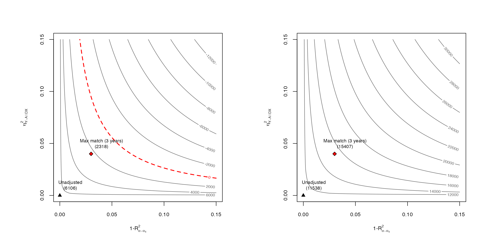
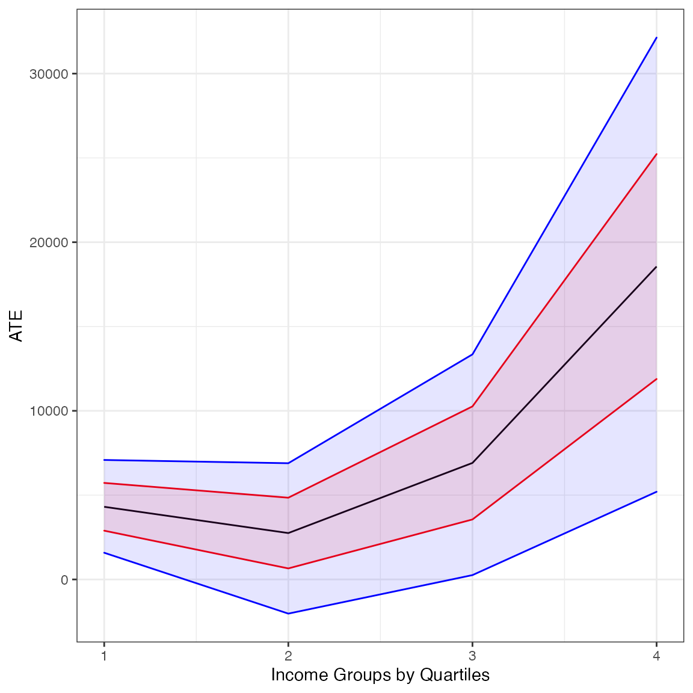

Sensitivity 401k
dml-401k.Rmd
library(dml.sensemakr)
#> See details in:
#> - Chernozhukov, V. Cinelli, C. Newey, W. Sharma, A. Syrgkanis, V. (2021). Long Story Short: Omitted Variable Bias in Causal Machine Learning. National Bureau of Economic Research, Working Paper Series, 30302.
#> - Available at: http://www.nber.org/papers/w30302
library(ggplot2)Loads data
## loads data
data("pension")
y <- pension$net_tfa # net total financial assets
d <- pension$e401 # 401K eligibility
x <- model.matrix(~ -1 + age + inc + educ+ fsize + marr + twoearn + pira + hown, data = pension)
x <- apply(x, 2, scale) # scale covariatesPartially Linear Model
# run DML
dml.401k.plm <- dml(y, d, x, model = "plm", cf.folds = 5, cf.reps = 5)
#> Debiased Machine Learning
#>
#> ======================================
#> Repeating 5-fold cross-fitting 5 times
#> ======================================
#>
#> -- Rep 1 -- Folds: 1 2 3 4 5
#>
#> -- Rep 2 -- Folds: 1 2 3 4 5
#>
#> -- Rep 3 -- Folds: 1 2 3 4 5
#>
#> -- Rep 4 -- Folds: 1 2 3 4 5
#>
#> -- Rep 5 -- Folds: 1 2 3 4 5
# results under ignorability
summary(dml.401k.plm)
#>
#> Debiased Machine Learning
#>
#> Model: Partially Linear
#> Cross-Fitting: 5 folds, 5 reps
#> ML Method: outcome (ranger, R2 = 27.006%), treatment (ranger, R2 = 11.493%)
#> Tuning: clean
#>
#> Average Treatment Effect:
#>
#> Estimate Std. Error t value P(>|t|)
#> ate 8822.1 1385.5 6.3672 1.925e-10 ***
#> ---
#> Signif. codes: 0 '***' 0.001 '**' 0.01 '*' 0.05 '.' 0.1 ' ' 1
#> Note: DML estimates combined using the median method.
# robustness values
robustness_value(dml.401k.plm, alpha = 1) # RV point estimate
#> ate
#> 0.07156923
robustness_value(dml.401k.plm, alpha = 0.05) # RV confidence bound
#> ate
#> 0.05270498
# confidence bounds under posited scenario
confidence_bounds(dml.401k.plm, r2ya.dx = 0.04, r2.rr = 0.03, level = 0.95)
#> lwr upr
#> ate 2317.562 15407.036
#>
#> Confidence level: point = 95%; region = 90%.
#> Sensitivity parameters: r2ya.dx = 0.04; r2.rr = 0.03; rho2 = 1.
# sensitivity contour plots
par(mfrow = c(1,2))
ovb_contour_plot(dml.401k.plm, which.bound = "lwr",
r2ya.dx = 0.04, r2.rr = 0.03,
bound.label = "Max match (3 years)")
ovb_contour_plot(dml.401k.plm, which.bound = "upr",
r2ya.dx = 0.04, r2.rr = 0.03,
bound.label = "Max match (3 years)")
Nonparametric Model
## compute income quartiles
g1 <- cut(x[,"inc"], quantile(x[,"inc"], c(0, 0.25,.5,.75,1), na.rm = TRUE),
labels = c("q1", "q2", "q3", "q4"), include.lowest = T)
## Nonparametric model
dml.401k.npm <- dml(y, d, x, groups = g1, model = "npm", cf.folds = 5, cf.reps = 5)
#> Debiased Machine Learning
#>
#> ======================================
#> Repeating 5-fold cross-fitting 5 times
#> ======================================
#>
#> -- Rep 1 -- Folds: 1 2 3 4 5
#>
#> -- Rep 2 -- Folds: 1 2 3 4 5
#>
#> -- Rep 3 -- Folds: 1 2 3 4 5
#>
#> -- Rep 4 -- Folds: 1 2 3 4 5
#>
#> -- Rep 5 -- Folds: 1 2 3 4 5
# results under ignorability
summary(dml.401k.npm)
#>
#> Debiased Machine Learning
#>
#> Model: Nonparametric
#> Cross-Fitting: 5 folds, 5 reps
#> ML Method: outcome (ranger, R2 = 26.721%), treatment (ranger, R2 = 11.517%)
#> Tuning: clean
#>
#> Average Treatment Effect:
#>
#> Estimate Std. Error t value P(>|t|)
#> ate 7989.1 1180.6 6.767 1.315e-11 ***
#> ---
#> Signif. codes: 0 '***' 0.001 '**' 0.01 '*' 0.05 '.' 0.1 ' ' 1
#>
#> Group Average Treatment Effect:
#>
#> Estimate Std. Error t value P(>|t|)
#> gate.q1 4322.03 858.85 5.0323 4.845e-07 ***
#> gate.q2 2749.67 1327.52 2.0713 0.0383332 *
#> gate.q3 6836.31 1854.94 3.6855 0.0002283 ***
#> gate.q4 18115.48 4025.09 4.5006 6.775e-06 ***
#> ---
#> Signif. codes: 0 '***' 0.001 '**' 0.01 '*' 0.05 '.' 0.1 ' ' 1
#>
#> Note: DML estimates combined using the median method.
# coefficient plot under ignorability
df <- data.frame(groups = 1:4, estimate = coef(dml.401k.npm)[-1])
cis <- confint(dml.401k.npm)[-1, ]
cis <- setNames(as.data.frame(cis), c("lwr.ci", "upr.ci"))
df <- cbind(df, cis)
ggplot(df, aes(x = groups, y = estimate)) + geom_line() +
geom_ribbon(aes(ymin = lwr.ci, ymax = upr.ci), alpha = 0.1, col = "blue", fill = "blue") +
theme_bw() +
xlab("Income Groups by Quartiles") +
ylab("ATE")
# robustness values
robustness_value(dml.401k.npm, alpha = 1) # RV point estimate
#> ate gate.q1 gate.q2 gate.q3 gate.q4
#> 0.06060851 0.09940249 0.04508581 0.06794165 0.09167264
robustness_value(dml.401k.npm, alpha = 0.05) # RV confidence bound
#> ate gate.q1 gate.q2 gate.q3 gate.q4
#> 0.045462937 0.067436920 0.008050924 0.035499473 0.059100541
# bounds and confidence bounds
bds <- confidence_bounds(dml.401k.npm, r2ya.dx = 0.04, r2.rr = 0.03, level = 0)
bds <- setNames(as.data.frame(bds), c("lwr.bound", "upr.bound"))
cbds <- confidence_bounds(dml.401k.npm, r2ya.dx = 0.04, r2.rr = 0.03, level = .95)
cbds <- setNames(as.data.frame(cbds), c("lwr.cbound", "upr.cbound"))
cbind(bds, cbds)
#> lwr.bound upr.bound lwr.cbound upr.cbound
#> ate 3495.5393 12482.740 1499.9796 14522.208
#> gate.q1 2870.7174 5773.339 1458.8422 7216.911
#> gate.q2 653.4936 4845.841 -1955.3800 6790.305
#> gate.q3 3419.5708 10253.053 105.6763 13337.489
#> gate.q4 11491.2385 24739.718 4907.9396 31528.692
# confidence bounds plot
df2 <- cbind(df, bds[-1,], cbds[-1, ])
ggplot(df2, aes(x = groups, y = estimate)) + geom_line() +
geom_ribbon(aes(ymin = lwr.bound, ymax = upr.bound), alpha = 0.1, col = "red", fill = "red") +
geom_ribbon(aes(ymin = lwr.cbound, ymax = upr.cbound), alpha = 0.1, col = "blue", fill = "blue") +
theme_bw() +
xlab("Income Groups by Quartiles") +
ylab("ATE")
# sensitivity contour plots
par(mfrow = c(1,2))
ovb_contour_plot(dml.401k.npm, which.bound = "lwr",
r2ya.dx = 0.04, r2.rr = 0.03,
bound.label = "Max match (3 years)")
ovb_contour_plot(dml.401k.npm, which.bound = "upr",
r2ya.dx = 0.04, r2.rr = 0.03,
bound.label = "Max match (3 years)")